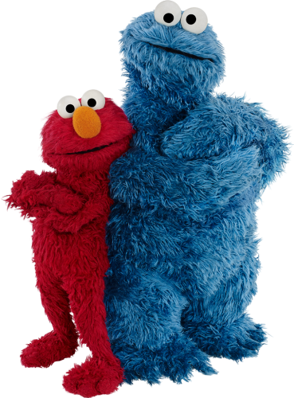

JUNTE-SE À RUA MAIS DIVERTIDA DO BRASIL

"Com 2,49 metros de altura, o Garibaldo é um pássaro amarelo de 6 anos e meio, muito dócil."
"Nosso programa educa e encanta famílias desde 1969. Você pode assistir a ele em plataformas como a Netflix, HBO Max e Prime Video, além da TV Brasil e no canal oficial do YouTube. Cada plataforma pode ter conteúdos diferentes, como episódios específicos, filmes ou temporadas, incluindo produções com celebridades."